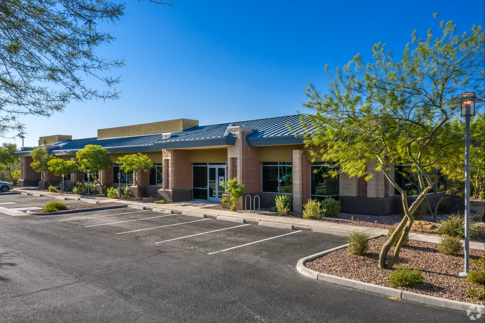
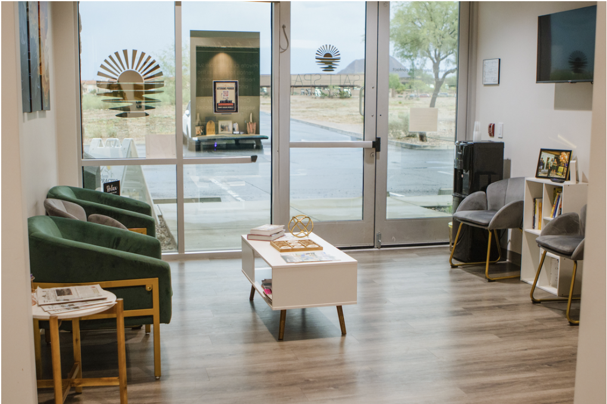
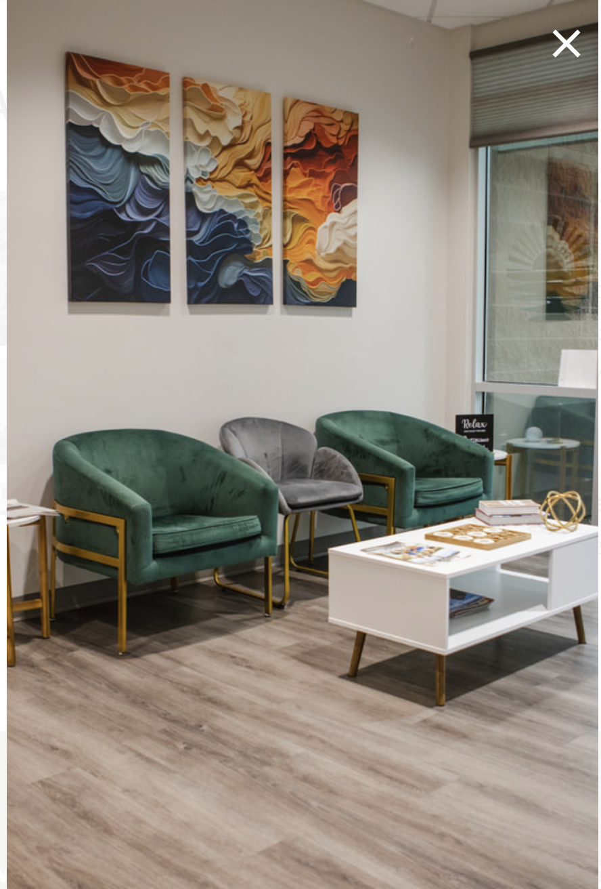

Start at Building C
Arrive at 41810 N Venture Dr, Building C, in Anthem.
Reach the office directly for appointment, insurance, billing, or general practice questions. Appointments are available in Anthem and by telehealth throughout Arizona.
Once inside Suite C122, we are in Office 5.
Use these three details to make the last part of the trip easier once you reach the Anthem office.
Arrive at 41810 N Venture Dr, Building C, in Anthem.
Once you are inside Building C, continue to Suite C122.
Back to Life Mental Health is located in Office 5 inside Suite C122.

A visual reference for the office location when you arrive.

One of the interior views patients may recognize on the way to Suite C122.

Another visual reference from the Anthem office location.
By appointment only. If you have trouble locating the suite after you arrive, call the office at 480-313-8583.
In-person care is available from the Anthem office for patients in the North Valley. Telehealth provides an option for established and new patients located elsewhere in Arizona when clinically appropriate.
Back to Life Mental Health is intentionally a small practice. That means fewer layers between you and the people helping coordinate your care.
Use the online scheduler or call the office if you would rather talk first.